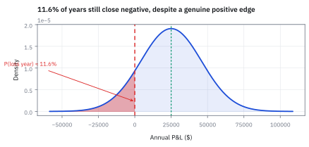
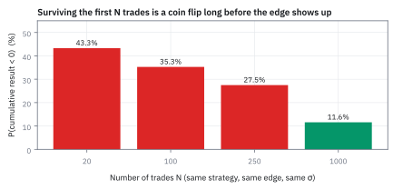

1.4 Variance and Standard Deviation
Variance คือค่าเฉลี่ยของระยะห่างจากค่าเฉลี่ยยกกำลังสอง ใช้วัดว่าผลจริงกระจายแค่ไหน และ standard deviation คือรากที่สองของมันที่กลับมาอยู่ในหน่วยเดิม
ผู้จัดการมีสองทางเลือก ทาง A จ่าย \$50 ทุกครั้งแน่นอน ทาง B คือกลยุทธ์ TSLA ที่เสีย \$1,000 (55%) เท่าทุน (15%) หรือได้ \$2,000 (30%) ทั้งสองทางได้เฉลี่ยครั้งละ \$50 เท่ากันตามหน้า expected value เขาถามว่า ถ้าเลือกทาง B แล้วทำ 1,000 ครั้ง โอกาสที่ผลรวมจะติดลบมีเท่าไร
ลองตอบก่อนเปิดเฉลย
ประมาณ 11% แม้แต่ละครั้งได้เปรียบ ผลรวม 1,000 ครั้งคาดว่าได้ \$50,000 แต่ผลจริงกระจายรอบตัวเลขนั้นด้วย standard deviation ราว \$41,800 ค่าศูนย์จึงอยู่ต่ำกว่าค่าเฉลี่ยแค่ 1.2 เท่าของ standard deviation การนับแบบตรงได้ 11.32% และการประมาณด้วย normal ได้ 11.58% ทาง A ไม่มีวันติดลบ ความต่างนี้คือสิ่งที่ค่าเฉลี่ยมองไม่เห็นและ variance วัดได้
ภาพรวมก่อนลงสูตร
expected value บอกว่าจุดศูนย์กลางอยู่ตรงไหน แต่ไม่บอกว่าผลจริงอยู่ห่างจากจุดนั้นแค่ไหน ทาง A กับทาง B มีจุดศูนย์กลางเดียวกัน ทาง A ไม่เคยห่างเลย ส่วนทาง B ห่างเป็นพันดอลลาร์ทุกครั้ง เราต้องการตัวเลขที่วัดความห่างนี้
วิธีที่วิชานี้เลือกคือวัดระยะจากค่าเฉลี่ย ยกกำลังสอง แล้วเฉลี่ยด้วยโอกาส ได้ variance การยกกำลังสองมีเหตุผล: มันกันไม่ให้ระยะบวกลบหักล้างกัน และทำให้ variance ของผลรวมที่เป็นอิสระบวกกันได้ ซึ่งเป็นสมบัติที่ใช้ทั้งเล่ม ราคาที่ต้องจ่ายคือหน่วยกลายเป็นกำลังสอง เราจึงถอดรากกลับเป็น standard deviation
หน้านี้จะสร้างนิยาม คำนวณสองวิธี ดูว่าการเปลี่ยนขนาดเปลี่ยนตัวเลขอย่างไร หา variance ของผลรวมพร้อม covariance แล้วใช้กฎ “ค่าเฉลี่ยโตตาม $n$ แต่ standard deviation โตตาม $\sqrt n$” ตอบคำถามของผู้จัดการ
รูป — ค่าเฉลี่ยเท่ากัน การกระจายต่างกัน
ศัพท์ที่ใช้ในหน้านี้
- variance
- $\mathrm{Var}(X)=\mathbb E[(X-\mu)^2]$ ค่าเฉลี่ยของระยะห่างจากค่าเฉลี่ยยกกำลังสอง ใช้วัดการกระจายและบวกข้ามผลที่เป็นอิสระได้
- standard deviation
- $\sigma=\sqrt{\mathrm{Var}(X)}$ การกระจายในหน่วยเดียวกับข้อมูล ใช้พูดว่า “ผลมักห่างจากค่าเฉลี่ยประมาณเท่าไร”
- volatility (ความผันผวน)
- standard deviation ของผลตอบแทนในช่วงเวลาที่ระบุ เช่น รายวันหรือรายปี เป็นตัวเลขความเสี่ยงที่ใช้มากที่สุดในตลาด
- covariance
- $\mathrm{Cov}(A,B)=\mathbb E[(A-\mu_A)(B-\mu_B)]$ บอกว่าสองตัวแปรมักอยู่เหนือหรือใต้ค่าเฉลี่ยพร้อมกันหรือไม่ ใช้หา variance ของผลรวม
- Sharpe ratio
- ค่าเฉลี่ยผลตอบแทนส่วนเกินหารด้วย standard deviation ของมัน ใช้เทียบว่าได้ผลตอบแทนเท่าไรต่อความผันผวนหนึ่งหน่วย
สัญลักษณ์ ความหมาย และหน่วย
| สัญลักษณ์ | ความหมาย | หน่วย |
|---|---|---|
| $\mu=\mathbb E[X]$ | ค่าเฉลี่ยต่อครั้ง = 0.05 | R |
| $\sigma^2=\mathrm{Var}(X)$ | variance ต่อครั้ง | R² |
| $\sigma$ | standard deviation ต่อครั้ง | R |
| $W=X_1+\cdots+X_n$ | ผลรวม $n$ ครั้ง | R |
| $\Phi(z)$ | CDF ของ standard normal | ไม่มีหน่วย |
ขั้นที่ 1 — เฉลี่ยระยะห่างตรง ๆ ได้ศูนย์เสมอ
ความคิดแรกที่ตรงที่สุดคือวัดระยะของแต่ละผลลัพธ์จากค่าเฉลี่ย $\mu=0.05$ แล้วเอามาเฉลี่ย เราลองแล้วจะเห็นว่าใช้ไม่ได้ ระยะของสามผลลัพธ์คือ −1.05, −0.05 และ +1.95
บรรทัดแรกใช้ linearity: $\mu$ เป็นค่าคงที่ จึงดึงออกจาก $\mathbb E$ ได้ ผลเป็นศูนย์ไม่ว่าการกระจายจะกว้างแค่ไหน เพราะค่าเฉลี่ยคือจุดสมดุลพอดี ระยะฝั่งบวกถ่วงโอกาสต้องเท่ากับระยะฝั่งลบถ่วงโอกาสเสมอ เราจึงต้องวัดขนาดของระยะโดยไม่สนเครื่องหมาย
ขั้นที่ 2 — ยกกำลังสองแล้วเฉลี่ย: นิยามของ variance
การยกกำลังสองทำให้ทุกระยะเป็นบวก และให้น้ำหนักระยะไกลมากกว่าระยะใกล้ ผลลัพธ์ที่อยู่ไกล 2 เท่าส่งผลเป็น 4 เท่า ซึ่งเข้ากับสัญชาตญาณของผู้ดูแลความเสี่ยงที่กลัวผลไกล ๆ มากกว่า
แต่ละพจน์คือ “พื้นที่ของสี่เหลี่ยมจัตุรัสที่ด้านยาวเท่าระยะห่าง” คูณโอกาส ตามรูปด้านล่าง ผล +2R อยู่ไกลที่สุด สี่เหลี่ยมของมันใหญ่ที่สุด จึงให้ variance มากกว่าครึ่งแม้โอกาสแค่ 0.30 ส่วนผล 0R อยู่ใกล้ค่าเฉลี่ยมาก แทบไม่มีส่วนเลย
ทำไมไม่ใช้ค่าสัมบูรณ์ซึ่งดูตรงกว่า: ลองเหรียญสองเหรียญที่เป็นอิสระ แต่ละเหรียญเป็น +1 หรือ −1 ครึ่งต่อครึ่ง ค่าสัมบูรณ์เฉลี่ยของแต่ละเหรียญคือ 1 แต่ของผลรวมคือ $2(1/4)+0(1/2)+2(1/4)=1$ ไม่ใช่ $1+1=2$ ส่วนกำลังสองเฉลี่ยของผลรวมคือ $4(1/4)+0+4(1/4)=2=1+1$ บวกกันได้พอดี สมบัติ “บวกกันได้” นี้คือเหตุผลหลักที่ variance ชนะ
รูป — variance คือพื้นที่สี่เหลี่ยมเฉลี่ยแบบถ่วงโอกาส
ขั้นที่ 3 — สูตรลัด: ค่าเฉลี่ยของกำลังสอง ลบ กำลังสองของค่าเฉลี่ย
การคำนวณระยะทีละผลลัพธ์ใช้ได้ แต่ถ้ามีผลลัพธ์มาก หรือถ้าเรารู้ $\mathbb E[X^2]$ อยู่แล้ว สูตรอีกแบบเร็วกว่า เราได้มันจากการกางวงเล็บแล้วใช้ linearity
บรรทัดที่สองดึง $2\mu$ และ $\mu^2$ ออกมาได้เพราะเป็นค่าคงที่ บรรทัดที่สามแทน $\mathbb E[X]=\mu$ ทั้งสองวิธีได้ 1.7475 ตรงกัน ใช้ตรวจกันเองได้
จุดที่ต้องระวังคือ $\mathbb E[X^2]=1.75$ กับ $(\mathbb E[X])^2=0.0025$ ห่างกันมาก ทั้งสองตัวเท่ากันได้ก็ต่อเมื่อ variance เป็นศูนย์ คือไม่มีการกระจายเลย เหมือนทาง A ในการคำนวณจริงบนคอมพิวเตอร์ สูตรลัดอาจเสียความแม่นเมื่อ $\mathbb E[X^2]$ กับ $\mu^2$ ใหญ่และใกล้กันมาก โปรแกรมสถิติจึงมักใช้สูตรตามนิยาม
ขั้นที่ 4 — standard deviation และผลของการเปลี่ยนขนาด
1.7475 R² อ่านเป็นเงินไม่ได้ เพราะหน่วยเป็นกำลังสอง เราถอดรากกลับเป็นหน่วยเดิม แล้วดูว่าเมื่อขยายขนาดการซื้อขาย หรือหักค่าคงที่ ตัวเลขเปลี่ยนอย่างไร
การบวกค่าคงที่ $b$ เลื่อนทั้งผลลัพธ์และค่าเฉลี่ยไปเท่ากัน ระยะห่างจึงไม่เปลี่ยน ต้นทุนคงที่ \$20 จึงไม่เปลี่ยนการกระจาย ส่วนการคูณด้วย $a$ ยืดทุกระยะ $a$ เท่า พื้นที่สี่เหลี่ยมจึงโต $a^2$ เท่า และ standard deviation โต $|a|$ เท่า
เทียบสองตัวเลขต่อครั้ง: ค่าเฉลี่ย \$50 แต่ standard deviation \$1,322 ใหญ่กว่า 26.4 เท่า ผลครั้งเดียวหรือสองครั้งจึงแทบไม่บอกอะไรเรื่อง edge ชนะ \$2,000 ครั้งเดียวไม่ได้พิสูจน์ว่ากลยุทธ์ดี แพ้ครั้งเดียวก็ไม่ได้พิสูจน์ว่าแย่
ขั้นที่ 5 — variance ของผลรวมต้องมี covariance
ค่าเฉลี่ยของผลรวมบวกกันได้เสมอ แต่ variance ไม่ใช่ เพราะกำลังสองของผลรวมมีพจน์ไขว้ ให้ $A$, $B$ เป็นผลของสองสถานะ และ $a$, $b$ เป็นขนาดของแต่ละสถานะ กางกำลังสองของระยะห่างของ $aA+bB$ ออกมา
พจน์ไขว้วัดว่าสองสถานะ “ขยับไปด้วยกัน” แค่ไหน ถ้ามักอยู่เหนือค่าเฉลี่ยพร้อมกัน ผลคูณของระยะเป็นบวก covariance เป็นบวก ความเสี่ยงรวมโตขึ้น ส่งสัญญาณเดียวกันเข้าสองบัญชี ($B=A$) ได้ variance 6.99 สองเท่าของกรณีอิสระ ถ้าสองสถานะสวนทางกันพอดี เช่น $B=0.1-A$ ซึ่งมีค่าเฉลี่ย 0.05 เท่ากัน covariance เป็นลบเต็มที่ ผลรวมคงที่ที่ 0.1R และ variance เป็นศูนย์ นี่คือหลักการ hedge
independence ทำให้ covariance เป็นศูนย์ เพราะค่าเฉลี่ยของผลคูณแยกเป็นผลคูณของค่าเฉลี่ยได้ และค่าเฉลี่ยของระยะห่างแต่ละตัวเป็นศูนย์ ทางกลับไม่จริง: ให้ $X$ เป็น −1, 0, 1 ด้วยโอกาสเท่ากัน และ $Y=X^2$ ได้ $\mathrm{Cov}(X,Y)=\mathbb E[X^3]-\mathbb E[X]\mathbb E[X^2]=0-0=0$ ทั้งที่รู้ $X$ แล้วรู้ $Y$ แน่นอน (zero covariance ไม่ได้แปลว่า independence)
รูป — สี่ชิ้นของ variance ของผลรวม
ขั้นที่ 6 — 1,000 ครั้ง: ค่าเฉลี่ยโตตาม n แต่ความผันผวนโตตาม √n
ตอนนี้กลับไปที่คำถามของผู้จัดการ ให้ $W=X_1+\cdots+X_n$ เป็นผลรวม $n$ ครั้ง โดยแต่ละครั้งเป็นอิสระและใช้ PMF เดียวกัน covariance ทุกคู่จึงเป็นศูนย์ เหลือแต่ชิ้นทแยง
ค่าเฉลี่ยรวมเป็นผลรวมของ 1,000 ชิ้น จึงโตเป็นเส้นตรง variance ก็โตเป็นเส้นตรงเหมือนกัน แต่ standard deviation คือรากของ variance จึงโตแค่ตาม $\sqrt n$ นี่คือเหตุผลที่การทำซ้ำช่วยคนที่มี edge: สัดส่วนค่าเฉลี่ยต่อความผันผวนโตตาม $\sqrt n$ ที่ 1,000 ครั้งได้ 1.196 เท่า
ความผิดพลาดที่พบบ่อยคือคูณ standard deviation ต่อครั้งด้วย 1,000 ได้ \$1.32 ล้าน ซึ่งใหญ่เกินจริงราว 32 เท่า การคูณแบบนั้นถูกเฉพาะเมื่อทุกครั้งเหมือนกันหมด ($B=A$ ทุกคู่) ส่วนจุดที่ค่าเฉลี่ยรวมเท่ากับหนึ่ง standard deviation พอดีคือ $n\mu=\sigma\sqrt n$ หรือ $n=\sigma^2/\mu^2=1.7475/0.0025=699$ ครั้ง ตัวเลขนี้คือที่มาของการแปลง Sharpe ratio ข้ามช่วงเวลา ซึ่งหน้าการทดสอบ Sharpe ratioจะใช้ต่อ
รูป — เส้นตรงของค่าเฉลี่ยกับเส้นโค้งรากที่สองของความผันผวน
ขั้นที่ 7 — แปลงเป็นโอกาสขาดทุน
ค่าเฉลี่ยกับ standard deviation สองตัวยังไม่ใช่โอกาส ต้องรู้รูปร่างของ distribution ด้วย ผลรวมของการซื้อขายอิสระจำนวนมากมีรูปร่างเข้าใกล้ระฆัง normal ตาม central limit theorem เราจึงวัดว่าศูนย์อยู่ห่างจากค่าเฉลี่ยกี่ standard deviation แล้วอ่านพื้นที่หางซ้ายของ normal distribution ให้ $\Phi$ เป็น CDF ของ standard normal
กลยุทธ์ที่ได้เปรียบทุกครั้งยังมีโอกาสราวหนึ่งในเก้าที่จะจบ 1,000 ครั้งด้วยผลรวมติดลบ ค่า $z$ คือระยะจากค่าเฉลี่ยถึงศูนย์วัดเป็นหน่วย standard deviation และค่า 1.196 ก็คืออัตราส่วนค่าเฉลี่ยต่อความผันผวนของผลรวม 1,000 ครั้งที่เพิ่งได้ บรรทัดแรกจึงอ่านว่า “พื้นที่ของระฆังที่อยู่ต่ำกว่าค่าเฉลี่ยเกิน 1.196 standard deviation”
บรรทัดสุดท้ายมาจากการนับตรงโดยไม่ใช้ normal: ผลรวมหลัง $n+1$ ครั้งเท่ากับ $k$ ได้สามทาง คือเดิมมี $k+1$ แล้วแพ้ เดิมมี $k$ แล้วเสมอ หรือเดิมมี $k-2$ แล้วชนะ ทำซ้ำ 1,000 รอบแล้วรวมโอกาสของผลรวมติดลบ (โค้ดท้ายหน้าทำแบบนี้) ได้ 11.32% ใกล้ค่าประมาณมาก แต่ที่ 20 ครั้ง การนับได้ 41.02% ขณะที่ normal ให้ 43.28% การประมาณดีขึ้นเมื่อจำนวนครั้งมากขึ้น และควรตรวจด้วยการนับเมื่อทำได้
รูป — พื้นที่ใต้ศูนย์ของผลรวม 1,000 ครั้ง

ระฆังนี้คือการประมาณ distribution ของผลรวม ไม่ใช่ PMF ของการซื้อขายครั้งเดียว ยอดอยู่ที่ 50R และพื้นที่สีทางซ้ายของศูนย์คือโอกาสขาดทุนราว 11.6% แม้จุดศูนย์กลางจะอยู่ในแดนบวกชัดเจน
รูป — โอกาสจบขาดทุนเมื่อจำนวนครั้งเพิ่ม

โอกาสจบขาดทุนลดลงเมื่อทำซ้ำมากขึ้น เพราะอัตราส่วนค่าเฉลี่ยต่อความผันผวนโตตาม $\sqrt n$ แต่ลดลงช้า ช่วงจำนวนครั้งน้อย ค่าประมาณจาก normal กับการนับตรงยังต่างกันหลายจุดเปอร์เซ็นต์
จุดที่พลาดแล้วได้คำตอบผิดโดยไม่รู้ตัว
คูณ standard deviation ด้วยจำนวนครั้ง: $1{,}000\times\$1{,}322=\$1.32$ ล้าน แทนที่จะเป็น $\sqrt{1{,}000}\times\$1{,}322\approx\$41{,}803$ ผิดไปราว 32 เท่า และทำให้กลยุทธ์ที่ดีดูเสี่ยงจนไม่มีใครกล้าทำ
ลบ variance ตอนหาผลต่าง: สองสถานะอิสระ $\mathrm{Var}(A-B)=\mathrm{Var}(A)+\mathrm{Var}(B)=3.495$ ไม่ใช่ศูนย์ เพราะ $b=-1$ และ $b^2=+1$ การลบสถานะที่ไม่เกี่ยวกันไม่ได้ลดความเสี่ยง มีแต่เพิ่ม ความเสี่ยงลดได้เฉพาะเมื่อ covariance เป็นบวกและใหญ่พอ
ขยายขนาดสองเท่าแล้วคิดว่า variance สองเท่า: $\mathrm{Var}(2X)=4\,\mathrm{Var}(X)$ ส่วน standard deviation สองเท่า ถ้ารายงานใช้ variance เป็นวงเงิน การเพิ่มขนาดสองเท่าจะใช้วงเงินสี่เท่า
ใช้กฎ 68–95–99.7 กับทุกอย่าง: สัดส่วนนั้นเป็นของ normal เท่านั้น การซื้อขายครั้งเดียวของเรามีผล +2R ซึ่งห่างจากค่าเฉลี่ย 1.48 standard deviation และมีโอกาสถึง 30% ไม่ได้เป็นเหตุการณ์หายากแบบที่ normal จะบอก
ใช้ทำอะไรบนโต๊ะจริง
กฎ $\sigma\sqrt n$ คือวิธีที่ตลาดแปลงความผันผวนข้ามช่วงเวลา ถ้าผลตอบแทนรายวันแต่ละวันเป็นอิสระ และปีหนึ่งมี 252 วันซื้อขาย ความผันผวนรายปีเท่ากับรายวันคูณ $\sqrt{252}\approx15.87$ หุ้นที่ขยับรายวันด้วย standard deviation 1.2% จึงมีความผันผวนรายปีราว $1.2\%\times15.87\approx19.0\%$ ส่วนผลตอบแทนเฉลี่ยรายปีคูณด้วย 252 ตรง ๆ Sharpe ratio รายปีจึงเท่ากับรายวันคูณ $\sqrt{252}$ ตัวเลขเหล่านี้ถูกต้องเท่าที่สมมติฐาน “แต่ละวันอิสระ” ถูกต้อง ถ้าผลตอบแทนมีความสัมพันธ์ข้ามวัน ต้องเพิ่มชิ้นไขว้กลับเข้าไป
โจทย์ตรวจความเข้าใจ
1. ลด 1R จาก \$1,000 เหลือ \$500 โดยโอกาสเท่าเดิม ทำ 1,000 ครั้งอย่างอิสระ ค่าเฉลี่ยและ standard deviation ต่อครั้งและของผลรวมเป็นเท่าไร อัตราส่วนค่าเฉลี่ยต่อความผันผวนเปลี่ยนไหม
เฉลย
ใช้ $a=500$: ค่าเฉลี่ยต่อครั้ง $500\times0.05=\$25$ standard deviation $500\times1.3219\approx\$660.97$ ผลรวม: ค่าเฉลี่ย \$25,000 standard deviation $\$660.97\times\sqrt{1{,}000}\approx\$20{,}902$ อัตราส่วนยังเป็น 1.196 เพราะทั้งเศษและส่วนถูกคูณด้วย 500 เท่ากัน ส่วน variance ในหน่วยดอลลาร์กำลังสองลดเหลือหนึ่งในสี่ การลดขนาดลดความเสี่ยงเป็นเงิน แต่ไม่ได้ทำให้โอกาสจบขาดทุนเปลี่ยน
2. จำนวนการซื้อขายในปีไม่แน่นอน: 900 หรือ 1,100 ครั้ง โอกาสเท่ากัน และไม่ขึ้นกับผลการซื้อขาย variance ของผลรวมในหน่วย R² เป็นเท่าไร
เฉลย
ถ้า 900 ครั้ง: ค่าเฉลี่ย 45R, variance $900\times1.7475=1{,}572.75$ ถ้า 1,100 ครั้ง: ค่าเฉลี่ย 55R, variance $1{,}922.25$ ความแกว่งมีสองแหล่ง แหล่งแรกคือความแกว่งภายในแต่ละกรณี เฉลี่ยได้ $\tfrac12(1{,}572.75+1{,}922.25)=1{,}747.5$ แหล่งที่สองคือค่าเฉลี่ยของสองกรณีต่างกัน 45 กับ 55 รอบค่าเฉลี่ยรวม 50 ได้ $\tfrac12(5^2)+\tfrac12(5^2)=25$ รวม $1{,}772.5$ R² standard deviation ≈ 42.10R การแยกสองแหล่งแบบนี้คือ law of total variance
3. สองกลยุทธ์อิสระ แต่ละตัวมี variance 1.7475 R² คนหนึ่งบอกว่าซื้อตัวหนึ่งแล้วขายอีกตัว (ถือ $A-B$) จะลดความเสี่ยง จริงไหม standard deviation ของ $A-B$ คือเท่าไร
เฉลย
ไม่จริง $\mathrm{Var}(A-B)=1^2(1.7475)+(-1)^2(1.7475)-2\,\mathrm{Cov}(A,B)=3.495$ เพราะ covariance เป็นศูนย์ standard deviation $=\sqrt{3.495}\approx1.87R$ สูงกว่าถือตัวเดียว (1.32R) การขายตัวหนึ่งลดความเสี่ยงได้ก็ต่อเมื่อสองตัวขยับไปด้วยกัน คือ covariance บวก
คำนวณซ้ำด้วย JavaScript
เปิดดูโค้ด
const pmf = [[-1, 0.55], [0, 0.15], [2, 0.30]];
const E = f => pmf.reduce((s, [x, p]) => s + f(x) * p, 0);
const mu = E(x => x);
const v1 = E(x => (x - mu) ** 2); // นิยาม
const v2 = E(x => x * x) - mu ** 2; // สูตรลัด
console.log(mu, v1, v2, Math.sqrt(v1)); // 0.05 1.7475 1.7475 1.3219
const n = 1000;
const sdW = Math.sqrt(n * v1);
console.log(n * mu, sdW, (n * mu) / sdW); // 50 41.80 1.196
console.log(v1 / mu ** 2); // 699
// นับ distribution ของผลรวมตรง ๆ (ไม่ใช้ normal)
function lossProb(trades) {
let dist = new Map([[0, 1]]);
for (let i = 0; i < trades; i++) {
const next = new Map();
for (const [total, pr] of dist)
for (const [x, p] of pmf)
next.set(total + x, (next.get(total + x) || 0) + pr * p);
dist = next;
}
let loss = 0;
for (const [total, pr] of dist) if (total < 0) loss += pr;
return loss;
}
console.log(lossProb(2), lossProb(20), lossProb(1000)); // 0.4675 0.4102 0.1132
console.log(Math.sqrt(252), 1.2 * Math.sqrt(252)); // 15.87 19.05สิ่งที่ควรตอบได้หลังอ่าน
- variance คือ $\mathbb E[(X-\mu)^2]=\mathbb E[X^2]-\mu^2$ กลยุทธ์ TSLA ได้ 1.7475 R² และ standard deviation 1.32R หรือ \$1,322 เทียบกับค่าเฉลี่ยแค่ \$50
- การบวกค่าคงที่ไม่เปลี่ยนการกระจาย การคูณด้วย $a$ คูณ variance ด้วย $a^2$ และ standard deviation ด้วย $|a|$
- $\mathrm{Var}(aA+bB)=a^2\mathrm{Var}(A)+b^2\mathrm{Var}(B)+2ab\,\mathrm{Cov}(A,B)$ ชิ้นไขว้ทำให้ความเสี่ยงรวมโตขึ้น คงเดิม หรือหายไปได้
- ภายใต้ independence ค่าเฉลี่ยรวมโตตาม $n$ ส่วน standard deviation โตตาม $\sqrt n$ หลัง 1,000 ครั้งได้ 50R กับ 41.8R และยังมีโอกาสจบขาดทุนราว 11.3%
- กฎรากที่สองเดียวกันใช้แปลงความผันผวนรายวันเป็นรายปีด้วย $\sqrt{252}$
หน้าถัดไป binomial distribution จะใช้ค่าเฉลี่ยและ variance ของผลรวมจากหน้านี้กับตัวแปร 0/1 เพื่อนับว่าผู้จัดการกองทุนที่ไม่มีฝีมือจะชนะตลาดได้กี่ปีจากสิบปี